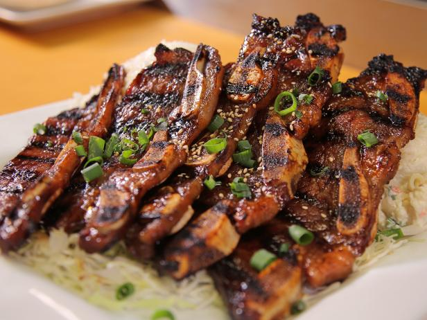

Kalbi Recipe

Description
Korean Dish which is essentially marinated Korean short ribs.
Ingredients
- 5 pounds Korean style beef short ribs
- 1 cup brown sugar, packed
- 1 cup soy sauce
- 1/2 cup water
- 1/4 cup mirin (rice wine)
- 1 small onion, peeled and finely grated
- 1 small Asian pear, peeled and finely grated
- 4 tablespoons minced garlic
- 2 tablespoons dark sesame oil
- 1/4 teaspoon black pepper
- 2 green onions, thinly sliced (optional)
Steps
Preparation:
- Sprinkle brown sugar over beef and mix well to evenly coat.
- Let sit at room temperature for 10 minutes while preparing marinade.
- In a bowl, whisk together remaining ingredients.
- Transfer beef into a large sealable freezer bag (you may need 2).
- Add marinade, press out excess air from bags, and seal.
- Turn bag over several times to ensure beef is evenly coated.
- Refrigerate for at least 4 hours but preferably overnight.
Cooking:
- Heat gas or charcoal grill to medium-hot.
- Drain excess marinade off beef.
- Grill short ribs, turning once, to desired doneness, about 3 to 4 minutes per side.
- Garnish with thinly sliced green onions, if desired.
- Serve whole pieces as a main course or cut into
smaller pieces, using kitchen shears, for a starter or party nibble.